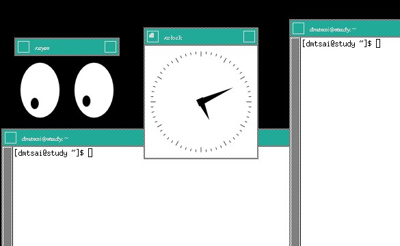

23.1 什么是 X Window System
Unix Like 操作系统不是只能进行服务器的架设而已，在美编、排版、制图、多媒体应用上也是有其需要的。 这些需求都需要用到图形接口 （Graphical User Interface, GUI） 的操作的， 所以后来才有所谓的 X Window System 这玩意儿。那么为啥图形窗口接口要称为 X 呢？因为就英文字母来看 X 是在 W（indow） 后面，因此，人们就戏称这一版的窗口接口为 X 啰 （有下一版的新窗口之意）！
事实上， X Window System 是个非常大的架构，他还用到网络功能呢！也就是说，其实 X 窗口系统是能够跨网络与跨操作系统平台的！ 而鸟哥这个基础篇是还没有谈到服务器与网络主从式架构，因此 X 在这里并不容易理解的。不过，没关系！ 我们还是谈谈 X 怎么来的，然后再来谈谈这 X 窗口系统的元件有哪些，慢慢来，应该还是能够理解 X 的啦！
23.1.1 X Window 的发展简史
X Window 系统最早是由 MIT （Massachusetts Institute of Technology, 麻省理工学院） 在 1984 年发展出来的， 当初 X 就是在 Unix 的 System V 这个操作系统版本上面开发出来的。在开发 X 时，开发者就希望这个窗口接口不要与硬件有强烈的相关性，这是因为如果与硬件的相关性高，那就等于是一个操作系统了， 如此一来的应用性会比较局限。因此 X 在当初就是以应用程序的概念来开发的，而非以操作系统来开发。
由于这个 X 希望能够通过网络进行图形接口的存取，因此发展出许多的 X 通讯协定，这些网络架构非常的有趣， 所以吸引了很多厂商加入研发，因此 X 的功能一直持续在加强！一直到 1987 年更改 X 版本到 X11 ，这一版 X 取得了明显的进步， 后来的窗口接口改良都是架构于此一版本，因此后来 X 窗口也被称为 X11 。这个版本持续在进步当中，到了 1994 年发布了新版的 X11R6 ，后来的架构都是沿用此一释出版本，所以后来的版本定义就变成了类似 1995 年的 X11R6.3 之类的样式。 [1]
1992 年 XFree86 （http://www.xfree86.org/） 计划顺利展开， 该计划持续在维护 X11R6 的功能性，包括对新硬件的支持以及更多新增的功能等等。当初定名为 XFree86 其实是根据“ X + Free software + x86 硬件 ”而来的呢。早期 Linux 所使用的 X Window 的主要核心都是由 XFree86 这个计划所提供的，因此，我们常常将 X 系统与 XFree86 挂上等号的说。
不过由于一些授权的问题导致 XFree86 无法继续提供类似 GPL 的自由软件，后来 Xorg 基金会就接手 X11R6 的维护！ Xorg （http://www.x.org/） 利用当初 MIT 发布的类似自由软件的授权， 将 X11R6 拿来进行维护，并且在 2004 年发布了 X11R6.8 版本，更在 2005 年后发表了 X11R7.x 版。 现在我们 CentOS 7.x 使用的 X 就是 Xorg 提供的 X11R7.X 喔！ 而这个 X11R6/X11R7 的版本是自由软件，因此很多组织都利用这个架构去设计他们的图形接口喔！包括 Mac OS X v10.3 也曾利用过这个架构来设计他们的窗口呢！我们的 CentOS 也是利用 Xorg 提供的 X11 啦！
从上面的说明，我们可以知道的是：
- 在 Unix Like 上面的图形使用者接口 （GUI） 被称为 X 或 X11；
- X11 是一个“软件”而不是一个操作系统；
- X11 是利用网络架构来进行图形接口的执行与绘制；
- 较著名的 X 版本为 X11R6 这一版，目前大部分的 X 都是这一版演化出来的 （包括 X11R7）；
- 现在大部分的 distribution 使用的 X 都是由 Xorg 基金会所提供的 X11 软件；
- X11 使用的是 MIT 授权，为类似 GPL 的开放源代码授权方式。
23.1.2 主要元件： X Server/X Client/Window Manager/Display Manager
如同前面谈到的，X Window system 是个利用网络架构的图形使用者接口软件，那到底这个架构可以分成多少个元件呢？ 基本上是分成 X Server 与 X Client 两个元件而已喔！其中 X Server 在管理硬件，而 X Client 则是应用程序。 在运行上，X Client 应用程序会将所想要呈现的画面告知 X Server ，最终由 X server 来将结果通过他所管理的硬件绘制出来！ 整体的架构我们大约可以使用如下的图示来作个介绍：[2]
 图23.1.1、X Window System 的架构
图23.1.1、X Window System 的架构
上面的图示非常有趣喔！我们在用户端想要取得来自服务器的图形数据时，我们用户端使用的当然是用户端的硬件设备啊， 所以，X Server 的重点就是在管理用户端的硬件，包括接受键盘/鼠标等设备的输入信息， 并且将图形绘制到屏幕上 （请注意上图的所有元件之间的箭头指示）。但是到底要绘制个啥东西呢？ 绘图总是需要一些数据才能绘制吧？此时 X Client （就是 X 应用程序） 就很重要啦！他主要提供的就是告知 X Server 要绘制啥东西。那照这样的想法来思考，我们是想要取得远端服务器的绘图数据来我们的计算机上面显示嘛！ 所以啰，远端服务器提供的是 X client 软件啊！
下面就让我们来更深入的聊一聊这两个元件吧！
- X Server：硬件管理、屏幕绘制与提供字体功能：
既然 X Window System 是要显示图形接口，因此理所当然的需要一个元件来管理我主机上面的所有硬件设备才行！ 这个任务就是 X Server 所负责的。而我们在 X 发展简史当中提到的 XFree86 计划及 Xorg 基金会，主要提供的就是这个 X Server 啦！那么 X Server 管理的设备主要有哪些呢？其实与输入/输出有关喔！包括键盘、鼠标、手写板、显示器 （monitor） 、屏幕分辨率与色彩深度、显卡 （包含驱动程序） 与显示的字体等等，都是 X Server 管理的。
咦！显卡、屏幕以及键盘鼠标的设置，不是在开机的时候 Linux 系统以 systemd 的相关设置处理好了吗？ 为何 X Server 还要重新设置啊？这是因为 X Window 在 Linux 里面仅能算是“一套很棒的软件”， 所以 X Window 有自己的配置文件，你必须要针对他的配置文件设置妥当才行。也就是说， Linux 的设置与 X Server 的设置不一定要相同的！因此，你在 CentOS 7 的 multi-user.target 想要玩图形接口时，就得要载入 X Window 需要的驱动程序才行～总之， X Server 的主要功能就是在管理“主机”上面的显示硬件与驱动程序。
既然 X Window System 是以通过网络取得图形接口的一个架构，那么用户端是如何取得服务器端提供的图形画面呢？ 由于服务器与用户端的硬件不可能完全相同，因此我们用户端当然不可能使用到服务器端的硬件显示功能！ 举例来说，你的用户端计算机并没有 3D 影像加速功能，那么你的画面可能呈现出服务器端提供的 3D 加速吗？ 当然不可能吧！所以啰 X Server 的目的在管理用户端的硬件设备！也就是说：“每部用户端主机都需要安装 X Server，而服务器端则是提供 X Client 软件， 以提供用户端绘图所需要的数据数据”。
X Server / X Client 的互动并非仅有 client --> server，两者其实有互动的！从上图 23.1.1 我们也可以发现， X Server 还有一个重要的工作，那就是将来自输入设备 （如键盘、鼠标等） 的动作告知 X Client， 你晓得， X Server 既然是管理这些周边硬件，所以，周边硬件的动作当然是由 X Server 来管理的， 但是 X Server 本身并不知道周边设备这些动作会造成什么显示上的效果， 因此 X Server 会将周边设备的这些动作行为告知 X Client ，让 X Client 去伤脑筋。
- X Client：负责 X Server 要求的“事件”之处理：
前面提到的 X Server 主要是管理显示接口与在屏幕上绘图，同时将输入设备的行为告知 X Client， 此时 X Client 就会依据这个输入设备的行为来开始处理，最后 X Client 会得到“ 嗯！这个输入设备的行为会产生某个图示”，然后将这个图示的显示数据回传给 X Server ， X server 再根据 X Client 传来的绘图数据将他描图在自己的屏幕上，来得到显示的结果。
也就是说， X Client 最重要的工作就是处理来自 X Server 的动作，将该动作处理成为绘图数据， 再将这些绘图数据传回给 X Server 啰！由于 X Client 的目的在产生绘图的数据，因此我们也称呼 X Client 为 X Application （X 应用程序）。而且，每个 X Client 并不知道其他 X Client 的存在， 意思是说，如果有两个以上的 X client 同时存在时，两者并不知道对方到底传了什么数据给 X Server ， 因此 X Client 的绘图常常会互相重叠而产生困扰喔！
举个例子来说，当我们在 X Window 的画面中，将鼠标向右移动，那他是怎么告知 X Server 与 X Client 的呢？ 首先， X server 会侦测到鼠标的移动，但是他不知道应该怎么绘图啊！此时，他将鼠标的这个动作告知 X Client， X Client 就会去运算，结果得到，嘿嘿！其实要将鼠标指标向右移动几个像素，然后将这个结果告知 X server ， 接下来，您就会看到 X Server 将鼠标指标向右移动啰～
这样做有什么好处啊？最大的好处是， X Client 不需要知道 X Server 的硬件配备与操作系统！因为 X Client 单纯就是在处理绘图的数据而已，本身是不绘图的。所以，在用户端的 X Server 用的是什么硬件？用的是哪套操作系统？服务器端的 X Client 根本不需要知道～相当的先进与优秀～对吧！ ^_^ 整个运行流程可以参考下图：用户端用的是什么操作系统在 Linux 主机端是不在乎的！
 图23.1.2、X Server 用户端的操作系统与 X client 的沟通示意
图23.1.2、X Server 用户端的操作系统与 X client 的沟通示意
- X Window Manager：特殊的 X Client ，负责管理所有的 X client 软件
刚刚前面提到，X Client 的主要工作是将来自 X Server 的数据处理成为绘图数据，再回传给 X server 而已， 所以 X client 本身是不知道他在 X Server 当中的位置、大小以及其他相关信息的。这也是上面我们谈到的， X client 彼此不知道对方在屏幕的哪个位置啊！为了克服这个问题，因此就有 Window Manager （WM, 窗口管理员） 的产生了。 窗口管理员也是 X client ，只是他主要在负责全部 X client 的控管，还包括提供某些特殊的功能，例如：
- 提供许多的控制元素，包括工作列、背景桌面的设置等等；
- 管理虚拟桌面 （virtual desktop）；
- 提供窗口控制参数，这包括窗口的大小、窗口的重叠显示、窗口的移动、窗口的最小化等等。
我们常常听到的 KDE, GNOME, XFCE 还有阳春到爆的 twm 等等，都是一些窗口管理员的专案计划啦！ 这些专案计划中，每种窗口管理员所用以开发的显示发动机都不太相同，所著重的方向也不一样， 因此我们才会说，在 Linux 下面，每套 Window Manager 都是独特存在的，不是换了桌面与显示效果而已， 而是连显示的发动机都不会一样喔！下面是这些常见的窗口管理员全名与链接：
- GNOME （GNU Network Object Model Environment）：http://www.gnome.org/
- KDE （K Desktop Enviroment）：http://kde.org/
- twm （Tab Window Manager）：http://xwinman.org/vtwm.php
- XFCE （XForms Common Environment）：http://www.xfce.org/
由于 Linux 越来越朝向 Desktop 桌面电脑使用方向走，因此窗口管理员的角色会越来越重要！ 目前我们 CentOS 默认提供的有 GNOME 与 KDE ，这两个窗口管理员上面还有提供非常多的 X client 软件， 包括办公室生产力软件 （Open Office） 以及常用的网络功能 （firefox 浏览器、 Thunderbird 收发信件软件） 等。 现在使用者想要接触 Linux 其实真的越来越简单了，如果不要架设服务器，那么 Linux 桌面的使用与 Windows 系统可以说是一模一样的！不需要学习也能够入门哩！ ^_^
那么你知道 X Server / X client / window manager 的关系了吗？我们举 CentOS 默认的 GNOME 为例好了， 由于我们要在本机端启动 X Window system ，因此，在我们的 CentOS 主机上面必须要有 Xorg 的 X server 核心， 这样才能够提供屏幕的绘制啊～然后为了让窗口管理更方便，于是就加装了 GNOME 这个计划的 window manager ， 然后为了让自己的使用更方便，于是就在 GNOME 上面加上更多的窗口应用软件，包括输入法等等的， 最后就建构出我们的 X Window System 啰～ ^_^！所以你也会知道，X server/X client/Window Manager 是同时存在于我们一部 Linux 主机上头的啦！
- Display Manager：提供登陆需求
谈完了上述的数据后，我们得要了解一下，那么我如何取得 X Window 的控制？在本机的命令行下面你可以输入 startx 来启动 X 系统，此时由于你已经登陆系统了，因此不需要重新登陆即可取得 X 环境。但如果是 graphical.target 的环境呢？你会发现在 tty1 或其他 tty 的地方有个可以让你使用图形接口登陆 （输入帐号密码） 的咚咚，那个是啥？ 是 X Server/X client 还是什么的？其实那是个 Display Manager 啦！这个 display manager 最大的任务就是提供登陆的环境， 并且载入使用者选择的 Window Manager 与语系等数据喔！
几乎所有的大型窗口管理员专案计划都会提供 display manager 的，在 CentOS 上面我们主要利用的是 GNOME 的 GNOME Display Manager （gdm） 这支程序来提供 tty1 的图形接口登陆喔！至于登陆后取得的窗口管理员， 则可以在 gdm 上面进行选择的！我们在第四章介绍的登陆环境， 那个环境其实就是 gdm 提供的啦！再回去参考看看图示吧！ ^_^！所以说，并非 gdm 只能提供 GNOME 的登陆而已喔！
23.1.3 X Window 的启动流程
现在我们知道要启动 X Window System 时，必须要先启动管理硬件与绘图的 X Server ，然后才载入 X Client 。 基本上，目前都是使用 Window Manager 来管理窗口接口风格的。那么如何取得这样的窗口系统呢？ 你可以通过登陆本机的命令行后，输入 startx 来启动 X 窗口；也能够通过 display manager （如果有启动 graphical.target） 提供的登陆画面，输入你的帐号密码来登陆与取得 X 窗口的！
问题是，你的 X server 配置文件为何？如何修改分辨率与显示器？你能不能自己设置默认启动的窗口管理员？ 如何设置默认的使用者环境 （与 X client 有关） 等等的，这些数据都需要通过了解 X 的启动流程才能得知！ 所以，下面我们就来谈谈如何启动 X 的流程吧！ ^_^
- 在命令行启动 X ：通过 startx 指令
我们都知道 Linux 是个多用户多任务的操作系统，所以啦，X 窗口也是可以根据不同的使用者而有不同的设置！ 这也就是说，每个用户启动 X 时， X server 的分辨率、启动 X client 的相关软件及 Window Manager 的选择可能都不一样！ 但是，如果你是首次登陆 X 呢？也就是说，你自己还没有创建自己的专属 X 画面时，系统又是从哪里给你这个 X 默认画面呢？而如果你已经设置好相关的信息，这些信息又是存放于何处呢？
事实上，当你在纯命令行且并没有启动 X 窗口的情况下来输入 startx 时，这个 startx 的作用就是在帮你设置好上头提到的这些动作啰！ startx 其实是一个 shell script ，他是一个比较友好的程序，会主动的帮忙使用者创建起他们的 X 所需要引用的配置文件而已。你可以自行研究一下 startx 这个 script 的内容，鸟哥在这里仅就 startx 的作用作个介绍。
startx 最重要的任务就是找出使用者或者是系统默认的 X server 与 X client 的配置文件，而使用者也能够使用 startx 外接参数来取代配置文件的内容。这个意思是说：startx 可以直接启动，也能够外接参数，例如下面格式的启动方式：
[root@study ~]# startx [X client 参数] -- [X server 参数]
# 范例：以色彩深度为 16 bit 启动 X
[root@study ~]# startx -- -depth 16
startx 后面接的参数以两个减号“--”隔开，前面的是 X Client 的设置，后面的是 X Server 的设置。 上面的范例是让 X server 以色彩深度 16 bit 色 （亦即每一像素占用 16 bit ，也就是 65536 色） 显示， 因为色彩深度是与 X Server 有关的，所以参数当然是写在 -- 后面啰，于是就成了上面的模样！
你会发现，鸟哥上面谈到的 startx 都是提到如何找出 X server / X client 的设置值而已！ 没错，事实上启动 X 的是 xinit 这支程序， startx 仅是在帮忙找出设置值而已！那么 startx 找到的设置值可用顺序为何呢？基本上是这样的：
X server 的参数方面：
- 使用 startx 后面接的参数；
- 若无参数，则找寻使用者主文件夹的文件，亦即 ~/.xserverrc
- 若无上述两者，则以 /etc/X11/xinit/xserverrc
- 若无上述三者，则单纯执行 /usr/bin/X （此即 X server 可执行文件）
X client 的参数方面：
- 使用 startx 后面接的参数；
- 若无参数，则找寻使用者主文件夹的文件，亦即 ~/.xinitrc
- 若无上述两者，则以 /etc/X11/xinit/xinitrc
- 若无上述三者，则单纯执行 xterm （此为 X 下面的终端机软件）
根据上述的流程找到启动 X 时所需要的 X server / X client 的参数，接下来 startx 会去调用 xinit 这支程序来启动我们所需要的 X 窗口系统整体喔！接下来当然就是要谈谈 xinit 啰～
- 由 startx 调用执行的 xinit
事实上，当 startx 找到需要的设置值后，就调用 xinit 实际启动 X 的。他的语法是：
[root@study ~]# xinit [client option] -- [server or display option]
那个 client option 与 server option 如何下达呢？其实那两个咚咚就是由刚刚 startx 去找出来的啦！ 在我们通过 startx 找到适当的 xinitrc 与 xserverrc 后，就交给 xinit 来执行。 在默认的情况下 （使用者尚未有 ~/.xinitrc 等文件时），你输入 startx ， 就等于进行 xinit /etc/X11/xinit/xinitrc -- /etc/X11/xinit/xserverrc 这个指令一般！但由于 xserverrc 也不存在，参考上一小节的参数搜寻顺序， 因此实际上的指令是：xinit /etc/X11/xinit/xinitrc -- /usr/bin/X，这样瞭了吗？
那为什么不要直接执行 xinit 而是使用 startx 来调用 xinit 呢？这是因为我们必须要取得一些参数嘛！ startx 可以帮我们快速的找到这些参数而不必手动输入的。因为单纯只是执行 xinit 的时候，系统的默认 X Client 与 X Server 的内容是这样的：[3]
xinit xterm -geometry +1+1 -n login -display :0 -- X :0
在 X client 方面：那个 xterm 是 X 窗口下面的虚拟终端机，后面接的参数则是这个终端机的位置与登陆与否。 最后面会接一个“ -display :0 ”表示这个虚拟终端机是启动在“第 :0 号的 X 显示接口”的意思。至于 X Server 方面， 而我们启动的 X server 程序就是 X 啦！其实 X 就是 Xorg 的链接文件，亦即是 X Server 的主程序啰！ 所以我们启动 X 还挺简单的～直接执行 X 而已，同时还指定 X 启动在第 :0 个 X 显示接口。 如果单纯以上面的内容来启动你的 X 系统时，你就会发现 tty2 以后的终端机有画面了！只是.....很丑～因为我们还没有启动 window manager 啊！
从上面的说明我们可以知道， xinit 主要在启动 X server 与载入 X client ，但这个 xinit 所需要的参数则是由 startx 去帮忙找寻的。因此，最重要的当然就是 startx 找到的那些参数啦！ 所以呢，重点当然就是 /etc/X11/xinit/ 目录下的 xinitrc 与 xserverrc 这两个文件的内容是啥啰～ 虽然 xserverrc 默认是不存在的。下面我们就分别来谈一谈这两个文件的主要内容与启动的方式～
- 启动 X server 的文件： xserverrc
X 窗口最先需要启动的就是 X server 啊，那 X server 启动的脚本与参数是通过 /etc/X11/xinit/ 里面的 xserverrc 。不过我们的 CentOS 7.x 根本就没有 xserverrc 这个文件啊！ 那使用者主文件夹目前也没有 ~/.xserverrc ，这个时候系统会怎么做呢？其实就是执行 /usr/bin/X 这个指令啊！ 这个指令也是系统最原始的 X server 可执行文件啰。
在启动 X Server 时，Xorg 会去读取 /etc/X11/xorg.conf 这个配置文件。针对这个配置文件的内容， 我们会在下个小节介绍。如果一切顺利，那么 X 就会顺利的在 tty2 以后终端环境中启动了 X 。 单纯的 X 启动时，你只会看到画面一片漆黑，然后中心有个鼠标的光标而已～
由前一小节的说明中，你可以发现到其实 X 启动的时候还可以指定启动的接口喔！那就是 :0 这个参数，这是啥？ 事实上我们的 Linux 可以“同时启动多个 X”喔！第一个 X 的画面会在 :0 亦即是 tty2 ，第二个 X 则是 :1 亦即是 tty3 。 后续还可以有其他的 X 存在的。因此，上一小节我们也有发现， xterm 在载入时，也必须要使用 -display 来说明， 这个 X 应用程序是需要在哪个 X 载入的才行呢！其中比较有趣的是， X server 未注明载入的接口时，默认是使用 :0 ～ 但是 X client 未注明时，则无法执行喔！

Tips CentOS 7 的 tty 非常有趣！如果你在分析 systemd 的章节中有仔细看的话， 会发现到其实 tty 是有用到才会启动的，这与之前 CentOS 6 以前的版本默认启用 6 个 tty 给你是不同的。因此，如果你只有用到 tty1 的话， 那么启动 X 就会默认丢到 tty2 ，而 X :1 就会丢到 tty3 这样～以此类推喔～
启动了 X server 后，接下来就是载入 X client 到这个 X server 上面啦！
- 启动 X Client 的文件： xinitrc
假设你的主文件夹并没有 ~/.xinitrc ，则此时 X Client 会以 /etc/X11/xinit/xinitrc 来作为启动 X Client 的默认脚本。xinitrc 这个文件会将很多其他的文件参数引进来， 包括 /etc/X11/xinit/xinitrc-common 与 /etc/X11/xinit/Xclients 还有 /etc/sysconfig/desktop 。你可以参考 xinitrc 后去搜寻各个文件来了解彼此的关系。
不过分析到最后，其实最终就是载入 KDE 或者是 GNOME 而已。你也可以发现最终在 XClient 文件当中会有两个指令的搜寻， 包括 startkde 与 gnome-session 这两个，这也是 CentOS 默认会提供的两个主要的 Window Manager 啰。 而你也可以通过修改 /etc/sysconfig/desktop 内的 DESKTOP=GNOME 或 DESKTOP=KDE 来决定默认使用哪个窗口管理员的。 如果你并没有安装这两个大家伙，那么 X 就会去使用阳春的 twm 这个窗口管理员来管理你的环境啰。
Tips 不论怎么说，鸟哥还是希望大家可以通过解析 startx 这个 script 的内容去找到每个文件， 再根据分析每个文件来找到您 distributions 上面的 X 相关文件～ 毕竟每个版本的 Linux 还是有所差异的～
另外，如果有特殊需求，你当然可以自订 X client 的参数！这就得要修改你主文件夹下的 ~/.xinitrc 这个文件啰。 不过要注意的是，如果你的 .xinitrc 配置文件里面有启动的 x client 很多的时候，千万注意将除了最后一个 window manager 或 X Client 之外，都放到背景里面去执行啊！举例来说，像下面这样：
xclock -geometry 100x100-5+5 &
xterm -geometry 80x50-50+150 &
exec /usr/bin/twm
意思就是说，我启动了 X ，并且同时启动 xclock / xterm / twm 这三个 X clients 喔！ 如此一来，你的 X 就有这三个咚咚可以使用了！如果忘记加上 & 的符号，那就..... 会让系统等待啊，而无法一次就登陆 X 呢！
- X 启动的端口
好了，根据上面的说明，我们知道要在命令行下面启动 X 时，直接使用 startx 来找到 X server 与 X client 的参数或配置文件， 然后再调用 xinit 来启动 X 窗口系统。xinit 先载入 X server 到默认的 :0 这个显示接口，然后再载入 X client 到这个 X 显示接口上。而 X client 通常就是 GNOME 或 KDE ，这两个设置也能够在 /etc/sysconfig/desktop 里面作好设置。最后我们想要了解的是，既然 X 是可以跨网络的，那 X 启动的端口是几号？
其实，CentOS 由于考虑 X 窗口是在本机上面运行，因此将端口改为插槽档 （socket） 了，因此你无法观察到 X 启动的端口的。事实上， X server 应该是要启动一个 port 6000 来与 X client 进行沟通的！ 由于系统上面也可能有多个 X 存在，因此我们就会有 port 6001, port 6002... 等等。这也就是说：（假设为 multi-user.target 模式， 且用户仅曾经切换到 tty1 而已）
| X 窗口系统 | 显示接口号码 | 默认终端机 | 网络监听端口 |
|---|---|---|---|
| 第一个 X | hostname:0 | tty2 | port 6000 |
| 第二个 X | hostname:1 | tty3 | port 6001 |
在 X Window System 的环境下，我们称 port 6000 为第 0 个显示接口，亦即为 hostname:0 ， 那个主机名称通常可以不写，所以就成了 :0 即可。在默认的情况下，第一个启动的 X （不论是启动在第几个 port number） 是在 tty2 ，亦即按下 [ctrl]+[Alt]+[F2] 那个画面。 而起动的第二个 X （注意到了吧！可以有多个 X 同时启动在您的系统上呢） 则默认在 tty3 亦即 [ctrl]+[Alt]+[F3] 那个画面呢！很神奇吧！ ^_^
如前所述，因为主机上的 X 可能有多个同时存在，因此，当我们在启动 X Server / Client 时， 应该都要注明该 X Server / Client 主要是提供或接受来自哪个 display 的 port number 才行。
23.1.4 X 启动流程测试
好了，我们可以针对 X Server 与 X client 的架构来做个简单的测试喔！ 这里鸟哥假设你的 tty1 是 multi-user.target 的，而且你也曾经在 tty2 测试过相关的指令，所以你的 X :1 将会启用在 tty3 喔！ 而且，下面的指令都是在 tty1 的地方执行的，至于下面的画面则是在 tty3 的地方展现。 因此，请自行切换 tty1 下达指令与 tty3 查阅结果啰！
1\. 先来启动第一个 X 在 :1 画面中：
[dmtsai@study ~]$ X :1 &
图23.1.3、单纯启动 X server的情况
上述的 X 是大写，那个 :1 是写在一起的，至于 & 则是放到背景去执行。此时系统会主动的跳到第二个图形接口终端机，亦即 tty8 上喔！所以如果一切顺利的话，你应该可以看到一个 X 的鼠标光标可以让你移动了（如上图所示）。 该画面就是 X Server 启动的画面啰！丑丑的，而且没有什么 client 可以用啊！ 接下来，请按下 [ctrl]+[alt]+[F1] 回到刚刚下达指令的终端机： （若没有 xterm 请自行 yum 安装它！）
2\. 输入数个可以在 X 当中执行的虚拟终端机
[dmtsai@study ~]$ xterm -display :1 &
[dmtsai@study ~]$ xterm -display :1 &
 图23.1.4、在 X 上面启动 xterm 终端机显示的结果
图23.1.4、在 X 上面启动 xterm 终端机显示的结果
那个 xterm 是必须要在 X 下面才能够执行的终端机接口。加入的参数 -display 则是指出这个 xterm 要在那个 display 使用的。这两个指令请不要一次下完！先执行一次，然后按下 [ctrl]+[alt]+[F3] 去到 X 画面中，你会发现多了一个终端机啰～ 不过，可惜的是，你无法看到终端机的标题、也无法移动终端机，当然也无法调整终端机的大小啊！我们回到刚刚的 tty1 然后再次下达 xterm 指令，理论上应该多一个终端机，去到 tty3 查阅一下。唉～没有多出一个终端机啊？ 这是因为两个终端机重叠了～我们又无法移动终端机，所以只看到一个。 接下来，请再次回到 tty1 去下达指令吧！（可能需要 yum install xorg-x11-apps 喔！）
3\. 在输入不同的 X client 观察观察，分别去到 tty3 观察喔！
[dmtsai@study ~]$ xclock -display :1 &
[dmtsai@study ~]$ xeyes -display :1 &
 图23.1.5、分别启动 xclock 时钟与 xeyes 眼睛的结果
图23.1.5、分别启动 xclock 时钟与 xeyes 眼睛的结果
跟前面一样的，我们又多执行了两个 X client ，其中 xclock 会显示时钟，而 xeyes 则是会出现一双大眼睛来盯着光标！ 你可以移动一下光标就可以发现眼睛的焦聚会跑啊 ^_^！不过，目前的四个 X client 通通不能够移动与放大缩小！ 如此一来，你怎么在 xterm 下面下达指令啊？当然就很困扰～所以让我们来载入最阳春的窗口管理员吧！
4\. 输入可以管理的 window manager，我们这边先以 root 来安装 twm 喔！
[root@study ~]# yum install http://ftp.ksu.edu.tw/FTP/CentOS/6/os/x86_64/\
> Packages/xorg-x11-twm-1.0.3-5.1.el6.x86_64.rpm
# 真要命！CentOS 7 说 twm 已经没有在维护，所以没有提供这玩意儿了！鸟哥只好拿旧版的 twm 来安装！
# 请您自行到相关的网站上找寻这个 twm 啰！因为版本可能会不一样！
[root@study ~]# yum install xorg-x11-fonts-{100dpi,75dpi,Type1}
5\. 接下来就可以开始用 dmtsai 的身份来玩一下这玩意儿了！
[dmtsai@study ~]$ twm -display :1 &
图23.1.6、窗口管理员 twm 的功能显示
回到 tty1 后，用最简单的 twm 这个窗口管理员来管理我们的 X 吧！输入之后，去到 tty3 看看，用鼠标移动一下终端机看看？可以移动了吧？也可以缩小放大窗口啰～同时也出现了标题提示啰～也看到两个终端机啦！ 现在终于知道窗口管理员的重要性了吧？ ^_^！在黑屏幕地方按下鼠标右键，就会出现类似上面画面最右边的菜单， 你就可以进行额外的管理啰～玩玩看先！
6\. 将所有刚刚创建的 X 相关工作全部杀掉！
[dmtsai@study ~]# kill %6 %5 %4 %3 %2 %1
很有趣的一个小实验吧～通过这个实验，你应该会对 X server 与 Window manager 及 tty3 以后的终端接口使用方式有比较清楚的了解～加油！
23.1.5 我是否需要启用 X Window System
谈了这么多 X 窗口系统方面的信息后，再来聊聊，那么你的 Linux 主机是否需要默认就启动 X 窗口呢？ 一般来说，如果你的 Linux 主机定位为网络服务器的话，那么由于 Linux 里面的主要服务的配置文件都是纯文本的格式文件， 相当的容易设置的，所以啊，根本就是不需要 X Window 存在呢！因为 X Window 仅是 Linux 系统内的一个软件而已啊！
但是万一你的 Linux 主机是用来作为你的桌上计算机用的，那么 X Window 对你而言，就是相当重要的一个咚咚了！因为我们日常使用的办公室软件，都需要使用到 X Window 图形的功能呢！此外，以鸟哥的例子来说，俺之前接触到的数值分析模式，需要利用图形处理软件来将数据读取出来， 所以在那部 Linux 主机上面，我一定需要 X Window 的。
由于目前的主机系统配备已经很不错，除非你使用的是单版计算机，否则桌面电脑、笔记本电脑的系统配备要拿来跑 X window 大概都不是问题！ 所以，是否默认要启用你的 X window 系统，完全掌握在你的服务器用途考虑上啰！！